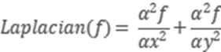
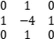
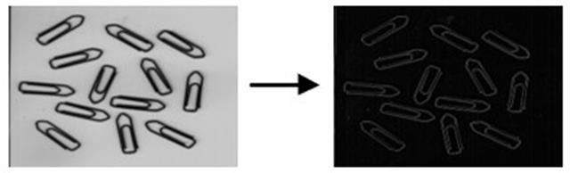

|
类型 |
滤波 |
|
描述 |
Laplacian算子对图像中的阶跃性边缘点定位正确，对噪声十分的敏感，会丢失一部分边缘的方向信息，造成一些不连续的检测边缘。Laplacian算子是n维欧几里德空间中的一个二阶微分算子。 假设图片为，Laplacian算子的定义：  3*3的Laplacian内核为：  别名：ZV_Laplace |
|
语法 |
ZV_ImpLaplace(src,dst,size)
参数： src：ZVOBJECT类型，源图像为单通道或三通道图像 dst：ZVOBJECT类型，滤波后图像，数据类型与src相同 size：滤波器尺寸，范围[1,31]，奇数 |
|
适用控制器 |
支持ZV功能或者5系列以上的控制器 |
|
例子 |
 ZVOBJECT src,dst ZV_ImgRead(src,"edge.png",0) '以原图像格式读取图片 ZV_ImpLaplace(src,dst,3) '3*3 Laplace边缘检测 |